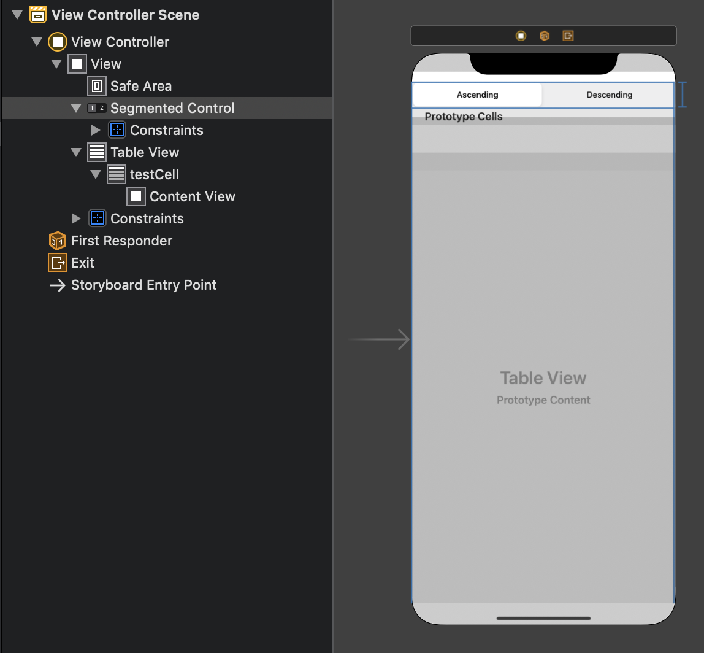
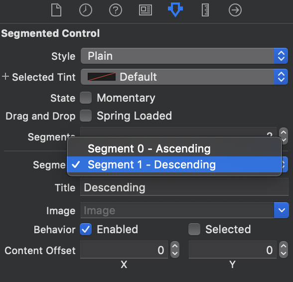
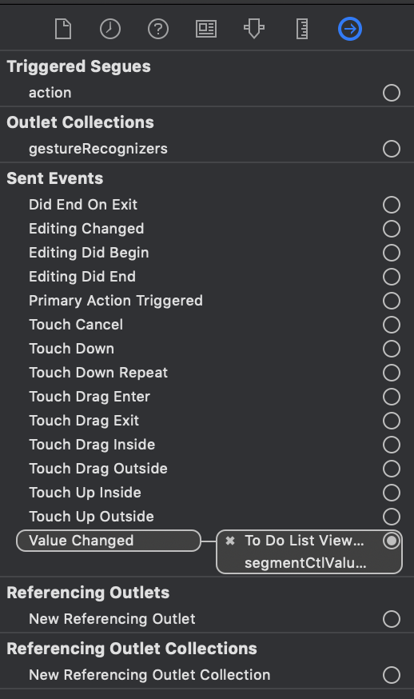

目標
- 降順、昇順の切り替えができるTableViewを作成する。
準備
Main.storyborad
部品を以下のように配置する。

Segmented Controlのラベルの設定は以下で行える。

TableViewCellのindentifierはtestCellとする。
ViewController.swift
後々の処理のため、TableViewに表示するデータをitems、その元データをitemsSourceと分けることにする。
class ViewController: UIViewController {
let itemsSource = ["items1", "items2", "items3", "items4", "items5", "items6", "items7", "items8"]
var items: [String] = []
@IBOutlet weak var segmentedControl: UISegmentedControl!
@IBOutlet weak var tableView: UITableView!
override func viewDidLoad() {
super.viewDidLoad()
// Do any additional setup after loading the view.
tableView.dataSource = self
items = itemsSource
}
}
extension ViewController: UITableViewDataSource {
func tableView(_ tableView: UITableView, numberOfRowsInSection section: Int) -> Int {
return items.count
}
func tableView(_ tableView: UITableView, cellForRowAt indexPath: IndexPath) -> UITableViewCell {
let cell = tableView.dequeueReusableCell(withIdentifier: "testCell")!
cell.textLabel?.text = items[indexPath.row]
return cell
}
}
Segmented Controlのイベント設定
ViewController.swiftに追記する。
override func viewDidLoad() {
...
segmentedControl.addTarget(self, action: #selector(segmentedCtlValueChanged(_:)), for: .valueChanged)
}
@objc func segmentedCtlValueChanged(_ sender: UISegmentedControl) {
let index = sender.selectedSegmentIndex
if index == 0 {
items = itemsSource
} else {
items = itemsSource.reversed()
}
tableView.reloadData()
}
addTarget
UI部品に対して何かイベントが発生した時の処理を設定する。JSでいうaddEventListenerみたいなものだと思う。
処理する関数名はSelectorの書式で書く。
以下の場合、ボタンが押されたときにself.buttonTappedメソッドが呼ばれる。ボタンの場合はStoryboardからAction接続する方が簡単だが、例のため書いている。
// addTarget(処理する関数の場所, 処理する関数名, イベントの種類)
button.addTarget(self, action: #selector(buttonTapped(_:)), for: .touchUpInside)
Selectorで指定した関数buttonTappedは次のような引数で定義する。先頭に@objcをつける。
@objc func buttonTapped(_ sender: UIButton) {
print("Tapped!")
}
forで指定できるイベントはたくさんある。詳しくはドキュメント参照。
segmentedControl.selectedSegmentIndex
これでどのセグメントが選択されているのかが番号として分かる。Ascendingが0、Descendingが1として割り振れらている。おそらく左から右へ番号が振られていると思う。
その他の知見
addTargetに指定できるSelectorとその実装は以下の3種類。ドキュメントは若干古いので、引数が少し異なる。またsenderの型は呼び出し元の型だから、UIButtonとは限らないことにも注意。
#selector(doSomething)
@IBAction func doSomething()
#selector(doSomething(_:))
@IBAction func doSomething(_ sender: UIButton)
#selector(doSomething(_:for:))
@IBAction func doSomething(_ sender: UIButton, for event: UIEvent)
追記: addTargetを使わない方法
Storyboardからコードへ普通にAction接続したらできることが判明した。Actionの種類を”Value Changed”にして接続すれば、上のaddTargetと全く同じ処理が書ける。どんな種類のActionが指定できるのかは接続時のプルダウンから見られるし、また以下のように右サイドバーから見ることも可能。

addTargetはAction接続のコード版という立ち位置で、同じ機能が実現できるのかも。
参考